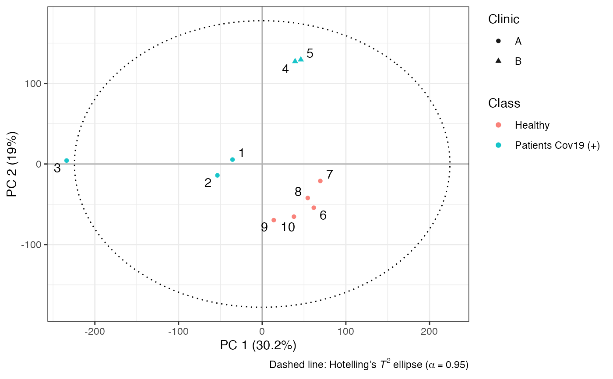

Performs Principal Component Analysis on metabolomics datasets. Supports NIPALS via Rcpp or alternative PCA algorithms from the pcaMethods package.
Arguments
- X
A numeric matrix or
data.frame, where rows represent observations and columns represent metabolic features.- pc
Integer. The number of principal components to compute. If
pcexceeds the allowed maximum, it will be set to the smaller ofnrow(X)orncol(X).- scale
Character. Scaling method to apply before PCA. One of
"None","UV"(unit variance), or"Pareto".- center
Logical. Whether to mean-center the variables. Defaults to
TRUE.- method
Character. Algorithm to use for PCA. Defaults to
"nipals"(Rcpp implementation). Alternatives include:"svd","ppca","svdImpute","robustPca", and"nlpca", all from the pcaMethods package.
Value
An S4 object of class "PCA_metabom8" containing:
t: Principal component scores (observations × components).p: Loadings matrix.X_mean: Feature means (for re-scaling).X_sd: Feature standard deviations (for re-scaling).Parameters: A list of metadata including centering/scaling choices, explained variance, and number of components.X: The original input matrix.
Details
The default "nipals" method uses an efficient NIPALS implementation in C++ via Rcpp for large datasets. If another method is specified, the function delegates to pca() from the pcaMethods package. Scaling and centering are performed manually before PCA, regardless of method.
References
Geladi, P., & Kowalski, B. R. (1986). Partial least squares and regression: a tutorial. Analytica Chimica Acta, 185, 1–17.
Examples
data(covid)
X <- covid$X
an <- covid$an
model <- pca(X, pc = 2)
plotscores(model, an = list(Class = an$type, Clinic = an$hospital, id = 1:nrow(an)), pc = c(1, 2))
